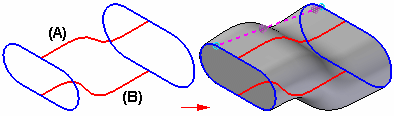
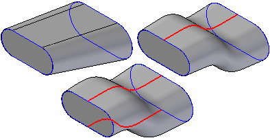
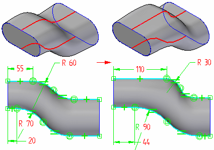

Guide Curves
Guide curves (A) (B) allow you to control the shape of a lofted or swept surface between the cross sections. You can use a sketch, the edge of an adjacent surface, or a curve that has been projected onto a surface as guide curves.

The shape of a lofted surface with the same cross section elements changes depending on whether there are no guide curves, one guide curve, or more than one guide curves.

When you use a sketch as a guide curve, you can edit the sketch to change the shape of the feature.

-
Guide Curve Guidelines
-
Every guide curve must touch every cross section in the loft.
-
Guide curves may extend beyond either end of the loft. The loft will begin and end at the end cross sections.
-
All guide curves must be closed for closed lofts.
-
Guide curves can meet in a single point on the first or last section. They cannot meet at interior sections.
-
Guide curves cannot cross one another.
-